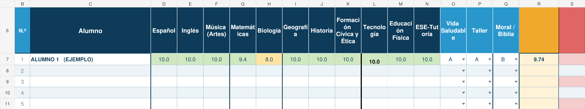
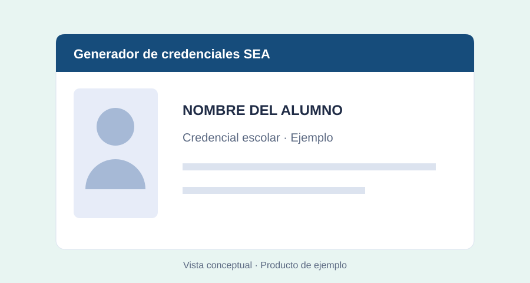
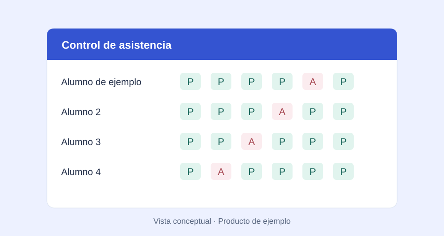

EjemploEvaluación · SEA
Registro de calificaciones con Identidad SEA
Una tabla de secundaria con registro por grupos, trimestres y campos de Identidad SEA.
Compra segura vía Hotmart**Demostración: pagos no habilitados.
Prepara pases de lista y registros de evidencias y evaluación para primaria, secundaria y preparatoria. Imprime por materia o reúne varios grupos en un libro para engargolar
En fase pilotoASR Educa desarrolló el generador para docentes de primaria, secundaria y preparatoria que preparan sus registros de asistencia, evidencias y evaluación. La herramienta prepara los formatos. La valoración del aprendizaje corresponde al docente.
Los formatos de materias generales y los de Identidad SEA son distintos. El docente elige el formato que corresponde a la materia que está registrando.
El generador está en fase piloto. El acceso para planteles se habilitará cuando esté lista la plataforma privada.
ASR Educa desarrolló esta herramienta con apoyo de inteligencia artificial. El diseño pedagógico y la revisión de los formatos estuvieron a cargo de Arnulfo de los Santos.
Conoce otras propuestas del catálogo.

EjemploUna tabla de secundaria con registro por grupos, trimestres y campos de Identidad SEA.

EjemploUna propuesta para personalizar las credenciales escolares de cada colegio.

EjemploUn ejemplo para registrar presentes, ausencias, retardos y justificantes de tu grupo.